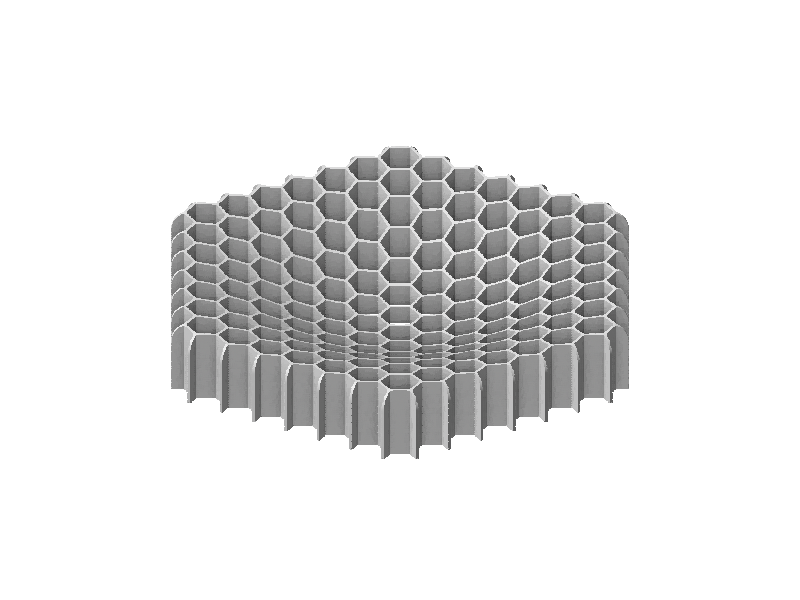
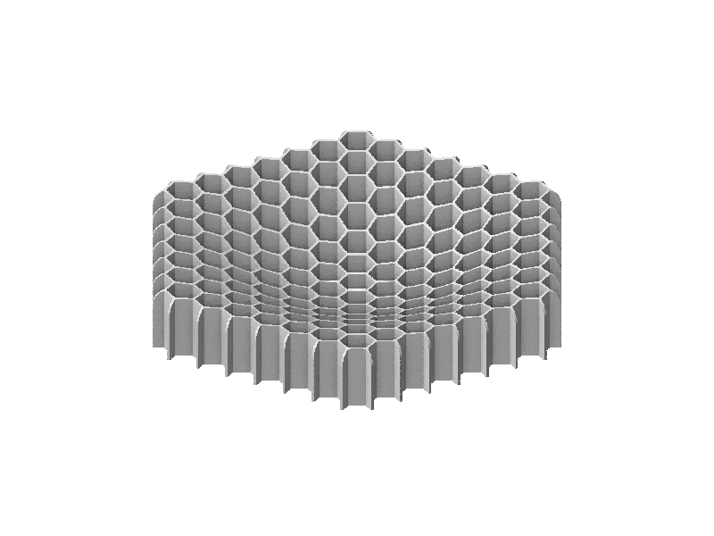

hex-bowl
Drafted with AI, not yet reviewed
by Reiorganisation/hexbowl.scad
Hex bowl: a shallow hexagonal bowl with rounded edges, its floor and walls pierced by a honeycomb of hexagonal holes.
Ported from src/organisation/hexbowl.scad. The hollow is
revolved round, where the original’s has 60 facets, and the rounding is
a true sphere’s, where its minkowski uses one of 48.
Compared with the original: within 0.11 mm, at the hollow’s facets.


Files
Source
// SPDX-License-Identifier: 0BSD // // Hex bowl: a shallow hexagonal bowl with rounded edges, its floor and // walls pierced by a honeycomb of hexagonal holes. // // Ported from `src/organisation/hexbowl.scad`. The hollow is // revolved round, where the original's has 60 facets, and the rounding is // a true sphere's, where its minkowski uses one of 48. // // Compared with the original: within 0.11 mm, at the hollow's facets. import "keycap/points" as points; // --- Parameters --- const R = 70.0; // circumradius of the hexagon const H = 20.0; // height const ROUNDING = 5.0; const FLOOR = 5.0; // floor thickness at the centre const HOLES = true; const PITCH = 10.0; // between neighbouring holes' centres const HOLE_R = 5.25; // hole circumradius, centre to corner // --- Bowl --- // A hexagonal prism with every edge rounded, cut flat at z = 0. let base = regular_polygon(6, R - ROUNDING) .extrude([0, H - ROUNDING]) .offset(ROUNDING) .intersection(-z); // The hollow: a cubic Bézier from the floor's centre to the rim, revolved. let profile = points::bezier([[0.0, FLOOR], [R / 2, FLOOR], [R / 2, H], [R, H]], 24); // The profile reaches past the axis: with its edge on the axis, the // hollow's field would be 0 all along it, and cutting it would leave a fin // of no thickness standing in the middle. profile += [[2.0 * R, H], [2.0 * R, 2.0 * H], [-1.0, 2.0 * H], [-1.0, FLOOR]]; let hollow = polygon(profile).revolve(); let bowl = base.difference(hollow); // --- Holes --- // A hole on a hexagonal lattice, repeated at the cost of one. let holes = regular_polygon(6, HOLE_R).rotate_z(30).hex_grid(PITCH); draw(if HOLES { bowl.difference(holes) } else { bowl });